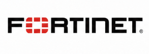
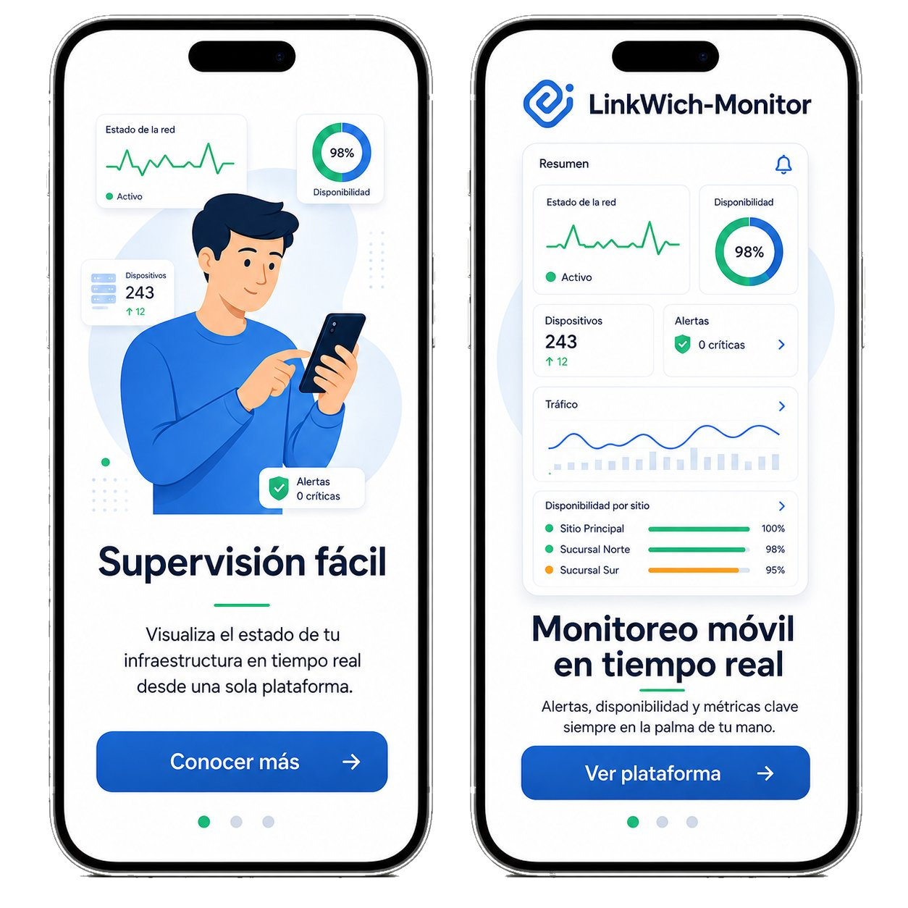
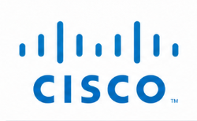
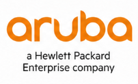
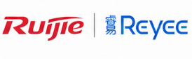
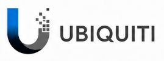
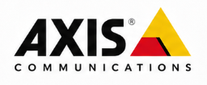
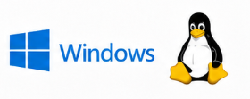

Fortinet
Fortinet
FortiGate/FortiSwitch: disponibilidad, interfaces, eventos, syslog y respaldos según alcance.


Monitoreo profesional para redes empresariales, hoteles y sitios críticos. Centraliza disponibilidad, SNMP, syslog, mapas LLDP, respaldos SSH/Telnet, alertas y reportes ejecutivos en una sola plataforma.
En LinkWich-Monitor, ayudamos a empresas a tener el control total de su infraestructura tecnológica. Nuestra plataforma de monitoreo ofrece visibilidad en tiempo real, alertas inteligentes y reportes detallados que simplifican la gestión de redes y dispositivos.
¿Qué ofrecemos?
Ofrecemos una solución completa y fácil de usar para monitorear el estado de tu red, detectar fallos antes de que se conviertan en problemas y tomar decisiones informadas con base en datos claros. Todo desde un panel centralizado, accesible desde cualquier lugar.
¿Por qué elegir LinkWich-Monitor?
Porque tu tiempo vale. Nuestra plataforma está diseñada para ayudarte a ahorrar recursos, evitar interrupciones y mantener tu operación siempre en marcha. Nos apoyamos en tecnología avanzada y una interfaz amigable que no requiere conocimientos técnicos para aprovechar al máximo.
Leer másVisualiza el estado de tu red en tiempo real, desde cualquier lugar y en cualquier momento.
Recibe notificaciones al instante cuando algo no va bien, para que actúes antes de que impacte tu negocio.
Detecta patrones, identifica cuellos de botella y mejora el rendimiento de tu infraestructura con datos claros.
Ya seas una pequeña empresa o una red corporativa, LinkWich-Monitor se adapta a tus necesidades actuales y futuras.
LinkWich-Monitor se integra con fabricantes de red, seguridad, videovigilancia, energía y servidores mediante protocolos estándar como SNMP, Syslog, LLDP y acceso remoto controlado.

FortiGate/FortiSwitch: disponibilidad, interfaces, eventos, syslog y respaldos según alcance.

Catalyst/IOS: interfaces, eventos, disponibilidad y trazabilidad por SSH/Telnet.

Switching campus: LLDP, interfaces, eventos y operación para hotelería/campus.
Switches Allied: topología LLDP, monitoreo, puertos y respaldos operativos.
Visibilidad de puertos, disponibilidad, eventos y topología en entornos ICX.

Routing/WiFi: disponibilidad, enlaces, interfaces y eventos por sitio.

UniFi/UISP: conectividad, enlaces, interfaces y disponibilidad según permisos.
Routers y borde: enlaces, tráfico, disponibilidad e interfaces críticas.
CCTV/NVR: disponibilidad de equipos, segmentos y servicios de videovigilancia.

Cámaras IP: validación de conectividad y visibilidad operativa por red.
UPS: estado, disponibilidad y variables SNMP para anticipar riesgos de energía.

Servidores: monitoreo de disponibilidad, servicios, recursos y plataforma base.
La plataforma sigue creciendo. Se pueden integrar nuevas marcas, comandos, respaldos y flujos de operación de acuerdo con la viabilidad técnica y los objetivos específicos de cada cliente.
Una vista más clara de lo que resuelve LinkWich-Monitor en operación diaria: monitoreo, automatización, alertamiento, auditoría y documentación para infraestructura TI.
Monitoreo de switches, WiFi, servidores y control de accesos.
Control de redes de aula, videovigilancia y laboratorios.
Supervisión de redes críticas para equipos médicos y servidores.
Monitoreo de terminales, puntos de venta y redes internas.
Sigue el flujo de implementación y uso en solo 4 pasos.
Detectamos automáticamente tus dispositivos SNMP y LLDP.
Supervisión de interfaces, almacenamiento, CPU, disponibilidad y más.
Notificaciones inmediatas por correo, banner, y dashboard.
Reportes automatizados, inventarios, y métricas descargables.

Mantén el control total de tu red con monitoreo en tiempo real y una vista clara de todos tus dispositivos.

No esperes a que surjan problemas. LinkWich-Monitor te avisa automáticamente cuando algo no está funcionando como debería.
Configura alertas personalizadas por email, popup o notificaciones internas. Reacciona en minutos y evita pérdidas de tiempo o interrupciones críticas.

Descubre cómo se conectan tus equipos con nuestro mapa dinámico basado en LLDP. Ideal para identificar problemas de conexión o crecimiento desordenado.

Toma decisiones informadas gracias a reportes claros y completos sobre disponibilidad, uso de ancho de banda y eventos importantes.
Conoce tendencias, identifica cuellos de botella y demuestra resultados con reportes exportables listos para presentación. Ideal para auditorías, gestión de SLA y planificación de capacidad.
Reels y demostraciones reales de LinkWich-Monitor.
Último Reel
Síguenos en Instagram: @linkwich.it
Vistas reales de dashboard, topología LLDP, terminal SSH, reportes e inteligencia operativa para redes empresariales.
Monitoreo SNMP, syslog con IA, mapas LLDP, respaldos automáticos y mucho más en una sola plataforma.
Notificaciones instantáneas vía WhatsApp, correo y dentro de la app para que nada se te escape.
Pagas por nodo, no por sensor. Sin costos ocultos ni sorpresas a fin de mes.
Módulos y automatizaciones a la carta. Evaluamos la viabilidad técnica y diseñamos soluciones a tu medida.
Instálalo como PWA en iOS, Android, Windows o Linux y accede a tus métricas en cualquier lugar.
Dashboard unificado, roles de usuario y geolocalización: evita depender de múltiples herramientas disparejas.
| LinkWich-Monitor | Competidores típicos | |
|---|---|---|
| Modelo de precios | Por nodo | Por sensor/módulo |
| Suite completa incluida | Parcial | |
| Alertas vía WhatsApp | ||
| Personalización / Integraciones | Limitada | |
| PWA iOS & multiplataforma |
Los precios y el cotizador se muestran únicamente a integradores, canales y aliados autorizados.
Consulta paquetes, precios por nodo y cotizador interno desde un acceso reservado para canales comerciales. Así puedes preparar propuestas sin publicar precios al usuario final.
Información visible únicamente para usuarios autorizados.
30 nodos | Redes pequeñas
$72,000 MXN/año (30 nodos)
Ahorro aprox.: $21,600 MXN/año
Licencia mínima de 6 meses
50 nodos | Redes en crecimiento
$108,000 MXN/año (50 nodos)
Ahorro aprox.: $30,000 MXN/año
Licencia mínima de 6 meses
Más popular
100 nodos | Redes medianas-grandes
$192,000 MXN/año (100 nodos)
Ahorro aprox.: $48,000 MXN/año
Licencia mínima de 1 año
Más de 150 nodos | Multi-sitio
$252,000 MXN/año (150 nodos estimados)
Ahorro aprox.: $36,000 MXN/año
Licencia mínima de 1 año
Solución modular para necesidades especiales del cliente.
Se cotiza según alcance, módulos, integraciones y viabilidad técnica.
Calcula nodos, meses, descuento comercial, implementación, servidor físico y total estimado para preparar una propuesta inicial.
Contáctanos hoy y recibe tu cotización sin compromiso.
Contáctanos hoy y recibe tu cotización sin compromiso.
Contáctanos hoy y recibe tu cotización sin compromiso.
Cotización a medida
Para asegurar rendimiento estable y monitoreo en tiempo real, recomendamos dimensionar recursos según número de nodos y retención de historial.
| Paquete | RAM | CPU | Almacenamiento |
|---|---|---|---|
| Básico | 8–16 GB | Intel i5 / equivalente | 500 GB SSD |
| Estándar | 8–16 GB | Intel i5/i7 / equivalente | 500 GB – 1 TB SSD |
| Empresarial | 16 GB | Intel i7 / equivalente | 1 TB SSD |
| Corporativo | 24–32 GB | Intel i9 / Xeon (6–12+ cores) | 1 TB SSD (o más) |
Conoce cómo LinkWich-Monitor puede ayudarte a mejorar la disponibilidad, anticipar incidencias y centralizar la operación de tu red desde una sola plataforma.